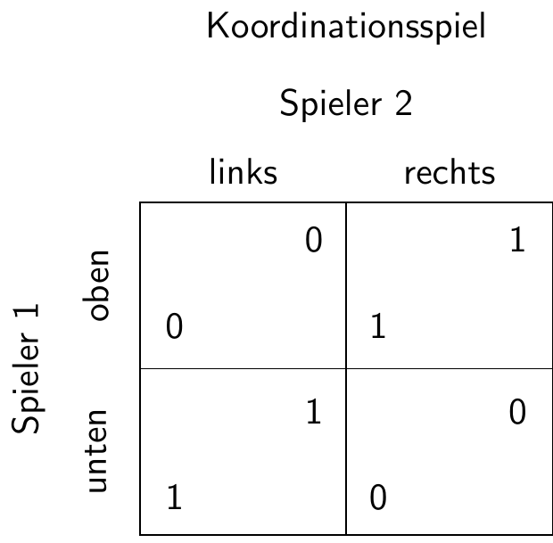

Ein Nash-Gleichgewicht liegt vor, wenn jeder Spieler die beste Antwort auf die beste Strategie des Gegenspielers spielt.
Formal:
\(u_{i}\left(s_{i}^{*},s_{-i}^{*}\right)\geq u_{i}\left(s_{i},s_{-i}^{*}\right)\mbox{ für alle }i,\mbox{ }s_{i}\in S_{i}\)
Intuition: Ein Nash-Gleichgewicht liegt vor, wenn kein Spieler mehr die Möglichkeit hat, seine Situation durch eine nur eigene Entscheidungsänderung zu verbessern.
In der Matrix oben heißt dass, das geprüft werden muss
\(A \geq B \land a \geq c\)\(\rightarrow\)ol
\(B \geq A \land b \geq d\)\(\rightarrow\)ul
\(C \geq D \land c \geq a\)\(\rightarrow\)or
\(D \geq C \land d \geq b\)\(\rightarrow\)ur
Es kann kein oder ein Nash-Gleichgewicht existieren oder mehrere Nash-Gleichgewichte
# Funktionen für Nash-Bedingungendef is_ol_nash(A, B, a, c):return"ol"if (A >= B) and (a >= c) else"not_ol"def is_ul_nash(B, A, b, d):return"ul"if (B >= A) and (b >= d) else"not_ul"def is_or_nash(C, D, c, a):return"or"if (C >= D) and (c >= a) else"not_or"def is_ur_nash(D, C, d, b):return"ur"if (D >= C) and (d >= b) else"not_ur"# Nash-Bedingungen überprüfen und Strings zuweisenCand_Nash_ol = is_ol_nash(A, B, a, c)Cand_Nash_ul = is_ul_nash(B, A, b, d)Cand_Nash_or = is_or_nash(C, D, c, a)Cand_Nash_ur = is_ur_nash(D, C, d, b)# Ergebnisse kombinieren und NAs entfernenNash_GG = np.array([Cand_Nash_ol, Cand_Nash_ul, Cand_Nash_or, Cand_Nash_ur])Nash_GG_filtered = []for element in Nash_GG:if element =="ol"or element =="ul"or element =="or"or element =="ur": Nash_GG_filtered.append(element)# Ergebnis ausgeben#print(Nash_GG_filtered)
Code
print(Nash_GG_filtered)
['ur']
3.2.2.2.1 Koordinationsspiel

Koordinationsspiel
Code
import numpy as npimport random# Zufällige Ganzzahlen zwischen 0 und 9 generierenA =0B = random.randint(1, 9)C = BD = Aa = Ab = Bc = Cd = D# Formatierte Bimatrix ausgebenprint(f" l r\n o {A},{a}{C},{c}\n u {B},{b}{D},{d}")
l r
o 0,0 9,9
u 9,9 0,0
Code
# Funktionen für Nash-Bedingungendef is_ol_nash(A, B, a, c):return"ol"if (A >= B) and (a >= c) else"not_ol"def is_ul_nash(B, A, b, d):return"ul"if (B >= A) and (b >= d) else"not_ul"def is_or_nash(C, D, c, a):return"or"if (C >= D) and (c >= a) else"not_or"def is_ur_nash(D, C, d, b):return"ur"if (D >= C) and (d >= b) else"not_ur"# Nash-Bedingungen überprüfen und Strings zuweisenCand_Nash_ol = is_ol_nash(A, B, a, c)Cand_Nash_ul = is_ul_nash(B, A, b, d)Cand_Nash_or = is_or_nash(C, D, c, a)Cand_Nash_ur = is_ur_nash(D, C, d, b)# Ergebnisse kombinieren und NAs entfernenNash_GG = np.array([Cand_Nash_ol, Cand_Nash_ul, Cand_Nash_or, Cand_Nash_ur])Nash_GG_filtered = []for element in Nash_GG:if element =="ol"or element =="ul"or element =="or"or element =="ur": Nash_GG_filtered.append(element)# Ergebnis ausgebenprint(Nash_GG_filtered)
['ul', 'or']
3.2.2.2.2 Chicken Game
Chicken Game
Code
import numpy as npimport random# Zufällige Ganzzahlen zwischen 0 und 9 generierenA = random.randint(5, 7)B = random.randint(8, 9)C = random.randint(2, 4)D = random.randint(0, 1)a = random.randint(5, 7)b = random.randint(2, 4)c = random.randint(8, 9)d = random.randint(0, 1)# Formatierte Bimatrix ausgebenprint(f" l r\n o {A},{a}{C},{c}\n u {B},{b}{D},{d}")
l r
o 7,5 3,9
u 9,2 0,1
Code
# Funktionen für Nash-Bedingungendef is_ol_nash(A, B, a, c):return"ol"if (A >= B) and (a >= c) else"not_ol"def is_ul_nash(B, A, b, d):return"ul"if (B >= A) and (b >= d) else"not_ul"def is_or_nash(C, D, c, a):return"or"if (C >= D) and (c >= a) else"not_or"def is_ur_nash(D, C, d, b):return"ur"if (D >= C) and (d >= b) else"not_ur"# Nash-Bedingungen überprüfen und Strings zuweisenCand_Nash_ol = is_ol_nash(A, B, a, c)Cand_Nash_ul = is_ul_nash(B, A, b, d)Cand_Nash_or = is_or_nash(C, D, c, a)Cand_Nash_ur = is_ur_nash(D, C, d, b)# Ergebnisse kombinieren und NAs entfernenNash_GG = np.array([Cand_Nash_ol, Cand_Nash_ul, Cand_Nash_or, Cand_Nash_ur])Nash_GG_filtered = []for element in Nash_GG:if element =="ol"or element =="ul"or element =="or"or element =="ur": Nash_GG_filtered.append(element)# Ergebnis ausgebenprint(Nash_GG_filtered)
['ul', 'or']
3.2.2.2.3 Geschlechterkampf
Geschlechterkampf
Code
import numpy as npimport random# Zufällige Ganzzahlen zwischen 0 und 9 generierenA = random.randint(8, 9)B = random.randint(0, 2)C = random.randint(3, 5)D = random.randint(6, 7)a = random.randint(6, 7)b = random.randint(0, 2)c = random.randint(3, 5)d = random.randint(8, 9)# Formatierte Bimatrix ausgebenprint(f" l r\n o {A},{a}{C},{c}\n u {B},{b}{D},{d}")
l r
o 8,6 3,4
u 0,2 7,8
Code
# Funktionen für Nash-Bedingungendef is_ol_nash(A, B, a, c):return"ol"if (A >= B) and (a >= c) else"not_ol"def is_ul_nash(B, A, b, d):return"ul"if (B >= A) and (b >= d) else"not_ul"def is_or_nash(C, D, c, a):return"or"if (C >= D) and (c >= a) else"not_or"def is_ur_nash(D, C, d, b):return"ur"if (D >= C) and (d >= b) else"not_ur"# Nash-Bedingungen überprüfen und Strings zuweisenCand_Nash_ol = is_ol_nash(A, B, a, c)Cand_Nash_ul = is_ul_nash(B, A, b, d)Cand_Nash_or = is_or_nash(C, D, c, a)Cand_Nash_ur = is_ur_nash(D, C, d, b)# Ergebnisse kombinieren und NAs entfernenNash_GG = np.array([Cand_Nash_ol, Cand_Nash_ul, Cand_Nash_or, Cand_Nash_ur])Nash_GG_filtered = []for element in Nash_GG:if element =="ol"or element =="ul"or element =="or"or element =="ur": Nash_GG_filtered.append(element)# Ergebnis ausgebenprint(Nash_GG_filtered)
['ol', 'ur']
3.2.2.2.4 Gefangenendilemma
Gefangenendilemma
Code
import numpy as npimport random# Zufällige Ganzzahlen zwischen 0 und 9 generierenA = random.randint(5, 7)B = random.randint(8, 9)C = random.randint(0, 1)D = random.randint(2, 4)a = random.randint(5, 8)b = random.randint(0, 1)c = random.randint(8, 9)d = random.randint(2, 4)# Formatierte Bimatrix ausgebenprint(f" l r\n o {A},{a}{C},{c}\n u {B},{b}{D},{d}")
l r
o 5,5 1,8
u 9,0 2,2
Code
# Funktionen für Nash-Bedingungendef is_ol_nash(A, B, a, c):return"ol"if (A >= B) and (a >= c) else"not_ol"def is_ul_nash(B, A, b, d):return"ul"if (B >= A) and (b >= d) else"not_ul"def is_or_nash(C, D, c, a):return"or"if (C >= D) and (c >= a) else"not_or"def is_ur_nash(D, C, d, b):return"ur"if (D >= C) and (d >= b) else"not_ur"# Nash-Bedingungen überprüfen und Strings zuweisenCand_Nash_ol = is_ol_nash(A, B, a, c)Cand_Nash_ul = is_ul_nash(B, A, b, d)Cand_Nash_or = is_or_nash(C, D, c, a)Cand_Nash_ur = is_ur_nash(D, C, d, b)# Ergebnisse kombinieren und NAs entfernenNash_GG = np.array([Cand_Nash_ol, Cand_Nash_ul, Cand_Nash_or, Cand_Nash_ur])Nash_GG_filtered = []for element in Nash_GG:if element =="ol"or element =="ul"or element =="or"or element =="ur": Nash_GG_filtered.append(element)# Ergebnis ausgebenprint(Nash_GG_filtered)
['ur']
3.2.2.3 Wiederholte Spiele
Ausgangspunkt Gefangenendilemma mit \(B>A>D>C\) und \(c>a>d>b\)
In jeder Runde wird mit der Wahrscheinlichkeit \(p\) eine weitere Runde gespielt.
Erwartungswert der Kooperation für Spieler 1: \(E^1_k\approx \frac{A}{1-p}\)
Erwartungswert der Nicht-Kooperation für Spieler 1: \(E^1_{nk}\approx B+ \frac{D}{1-p}-D\)
Erwartungswert der Kooperation für Spieler 2: \(E^2_k\approx \frac{a}{1-p}\)
Erwartungswert der Nicht-Kooperation für Spieler 2: \(E^2_{nk}\approx c+ \frac{d}{1-p}-d\)
Kooperation durch Spieler 1 wenn \(p\geq \frac{B-A}{B-D}\)
Kooperation durch Spieler 2 wenn \(p\geq \frac{c-a}{c-d}\)
import numpy as npimport random# Zufällige Ganzzahlen zwischen 0 und 9 generierenA = random.randint(5, 7)B = random.randint(8, 9)C = random.randint(0, 1)D = random.randint(2, 4)a = random.randint(5, 8)b = random.randint(0, 1)c = random.randint(8, 9)d = random.randint(2, 4)# Formatierte Bimatrix ausgebenprint(" l r")print(f"o {A},{a}{C},{c}")print(f"u {B},{b}{D},{d}")# Funktionen für Nash-Bedingungendef is_ol_nash(A, B, a, c):return"ol"if (A >= B) and (a >= c) else"not_ol"def is_ul_nash(B, A, b, d):return"ul"if (B >= A) and (b >= d) else"not_ul"def is_or_nash(C, D, c, a):return"or"if (C >= D) and (c >= a) else"not_or"def is_ur_nash(D, C, d, b):return"ur"if (D >= C) and (d >= b) else"not_ur"# Nash-Bedingungen überprüfen und Strings zuweisenCand_Nash_ol = is_ol_nash(A, B, a, c)Cand_Nash_ul = is_ul_nash(B, A, b, d)Cand_Nash_or = is_or_nash(C, D, c, a)Cand_Nash_ur = is_ur_nash(D, C, d, b)# Ergebnisse kombinieren und NAs entfernenNash_GG = np.array([Cand_Nash_ol, Cand_Nash_ul, Cand_Nash_or, Cand_Nash_ur])Nash_GG_filtered = []for element in Nash_GG:if element =="ol"or element =="ul"or element =="or"or element =="ur": Nash_GG_filtered.append(element)# Ergebnis ausgebenprint(Nash_GG_filtered)# Kritisches p für Kooperationp_krit = (B-A)/(B - D)#print(round(p_krit,3))print(f"Für Kooperation durch Spieler 1 muss die Wahrscheinlichkeit für eine weitere Runde mindestens {str(round(p_krit,3)).replace('.',',')} betragen.")p_krit = (c-a)/(c - d)#print(round(p_krit,3))print(f"Für Kooperation durch Spieler 2 muss die Wahrscheinlichkeit für eine weitere Runde mindestens {str(round(p_krit,3)).replace('.',',')} betragen.")
3.2.2.4 Trembling Hand
Idee: Manche Nash-Gleichgewichte sind riskant
Wenn der Gegenspieler “versehentlich” eine falsche Strategie spielt, dann macht man evtl hohe Verluste
Wie hoch darf die Fehlerwahrscheinlichkeit des Gegenspielers sein, damit das Nash-Gleichgewicht noch die richtige Strategie impliziert?
Angenommen, beide Spieler streben ein Nash-Gleichgewicht oben links an
Für Spieler 1 muss dann gelten
\(E_o\geq E_u\)
Wenn er davon ausgeht, dass Spieler 2 mit einer Wahrscheinlichkeit von \(p\) versehentlich rechts statt links spielt, heißt das
\((1-p)A+pC \geq (1-p)B+pD\)
\(\iff A-pA+pC\geq B-pB+pD\)
\(\iff A-p(A-C) \geq B-p(B-D)\)
\(\iff p(B-D)-p(A-C) \geq B-A\)
\(\iff p(B-D-A+C)\geq B-A\)
mit \((B-D-A+C) <0\)
\(\iff p \leq \frac{B-A}{B-A-D+C}=\frac{A-B}{A-B-C+D}\)
# Wahrscheinlichkeiten ausrechnenfrom sympy import Symbol, solve, Eqsymbols = [Symbol(name) for name in'ABCDabcdp']A, B, C, D, a, b, c, d, p = symbols # Entpacken und als separate Variablen speichern# Beide streben ol anE_o= (1-p)*A+p*CE_u= (1-p)*B + p*Dsol = solve(Eq(E_o, E_u), p)print(sol)E_l = (1-p)*a + p*bE_r = (1-p)*c + p*dsol = solve(Eq(E_l, E_r),p)print(sol)
3.2.3 Gemischte Strategien
Es könnte sinnvoll sein, zufällig zu spielen, um nicht vorhersehbar zu sein
Gesucht sind die Wahrscheinlichkeiten, bei denen der Gegenspieler indifferent ist in der Wahl seiner Handlungsmöglichkeiten (also seine Lage durch cleveres Spielen nicht verbessern kann)
Code
# Wahrscheinlichkeiten ausrechnenfrom sympy import Symbol, solve, Eqsymbols = [Symbol(name) for name in'ABCDabcdp']A, B, C, D, a, b, c, d, p = symbols # Auspacken in verschiedene Variablen#p_lE_o= p*A+(1-p)*CE_u= p*B + (1-p)*Dsol = solve(Eq(E_o, E_u), p)print(sol)#p_oE_l = p*a + (1-p)*bE_r = p*c + (1-p)*dsol = solve(Eq(E_l, E_r),p)print(sol)
Code
import numpy as npimport random# Zufällige Ganzzahlen zwischen 0 und 9 generierenA = random.randint(0, 9)B = random.randint(0, 9)C = random.randint(0, 9)D = random.randint(0, 9)a = random.randint(0, 9)b = random.randint(0, 9)c = random.randint(0, 9)d = random.randint(0, 9)# Formatierte Bimatrix ausgebenprint(f" l r\n o {A},{a}{C},{c}\n u {B},{b}{D},{d}")# Funktionen für Nash-Bedingungendef is_ol_nash(A, B, a, c):return"ol"if (A >= B) and (a >= c) else"not_ol"def is_ul_nash(B, A, b, d):return"ul"if (B >= A) and (b >= d) else"not_ul"def is_or_nash(C, D, c, a):return"or"if (C >= D) and (c >= a) else"not_or"def is_ur_nash(D, C, d, b):return"ur"if (D >= C) and (d >= b) else"not_ur"# Nash-Bedingungen überprüfen und Strings zuweisenCand_Nash_ol = is_ol_nash(A, B, a, c)Cand_Nash_ul = is_ul_nash(B, A, b, d)Cand_Nash_or = is_or_nash(C, D, c, a)Cand_Nash_ur = is_ur_nash(D, C, d, b)# Ergebnisse kombinieren und NAs entfernenNash_GG = np.array([Cand_Nash_ol, Cand_Nash_ul, Cand_Nash_or, Cand_Nash_ur])Nash_GG_filtered = []for element in Nash_GG:if element =="ol"or element =="ul"or element =="or"or element =="ur": Nash_GG_filtered.append(element)# Ergebnis ausgebenprint(Nash_GG_filtered)# Anzahl der Nash GG#Anzahl_NGG=len(Nash_GG_filtered)#print(Anzahl_NGG)# Wahrscheinlichkeiten ausrechnen.# Dabei jeweils den Fall Division duch 0 aussschließen#p_lif (A - B - C + D)!=0: p_l = ( D-C)/(A - B - C + D)#print(round(p_l, 2))#p_oif (-b + d)/(a - b - c + d)!=0: p_o = (-b + d)/(a - b - c + d)#print(round(p_o, 2))# Ausgabe Abhängig von Bedingungenif (#Anzahl_NGG == 1 or p_o <0or p_l <0or p_o >1or p_l >1or (a - b - c + d) ==0or (A - B - C + D) ==0): print("Kein Nash-Gleichgewicht in gemischten Strategien")else: print(f"p_l= {round(p_l, 2)}, p_o= {(round(p_o, 2))}")
3.3 Sequenzielle Spiele
Spieler spielen nacheinander.
3.3.1 Vollständige Information
Annahme: Alle Spieler kennen alle Auszahlungen und sehen alle bislang erfolgten Spielzüge
Darstellung des Spiels mittels eines Spielbaums
Grundstruktur eines Spielbaums
3.3.1.1 Rückwärtsinduktion
Lösen des Spiels “von hinten nach vorn”
3.3.1.1.1 Beispiele
Beispiel für Rückwärtsinduktion
Beispiel für Rückwärtsinduktion
3.3.1.1.2 Bedingungen für ein Nash-Gleichgewicht
Zunächst vereinfachende Annahme: \(a\neq c\ \text{und}\ b \neq d\)
import numpy as npimport randomrandom.seed(123) # Für reproduzierbare Ergebnisse ggf. fixieren# Zufällige Ganzzahlen zwischen 0 und 9 generieren#A = random.randint(0, 9)#B = random.randint(0, 9)#C = random.randint(0, 9)#D = random.randint(0, 9)#a = random.randint(0, 9)#b = random.randint(0, 9)#c = random.randint(0, 9)#d = random.randint(0, 9)#A = 1#B = 0#C = 0#D = 0#a = 1#b = 0#c = 0#d = 0# Zufallszahlen, aber alle unterschiedlichchoices = np.arange(10)# Generate unique random integers for uppercase variablesParameter = np.random.choice(choices, size=8, replace=False)A, B, C, D, a, b, c, d = Parameter# Formatierte Bimatrix ausgeben#print(" l r")#print(f"o {A},{a} {C},{c}")#print(f"u {B},{b} {D},{d}")# Spielbaum ausgebenprint(f" ol: {A}, {a}\n or: {C}, {c}\n ul: {B}, {b}\n ur: {D}, {d}")
ol: 0, 3
or: 1, 7
ul: 6, 9
ur: 5, 4
Code
# Funktionen für Nash-Bedingungen# Spieler 2 (a) entscheidet l/r, Spieler 1 (A) entscheidet o/udef is_ol_nash(A, B, D, a, b, c, d):return"ol"if ((a > c) and ((A>= B and b> d) or (A >= D and d>=b))) else"not_ol"def is_or_nash( B, C, D, a, b, c, d):return"or"if (c>a and ((C>= B and b>=d) or (C >= D and d>b))) else"not_or"def is_ul_nash(A, B, C, a, b, c, d):return"ul"if (b>=d and ((B>= A and a>= c) or (B >= C and c>=a))) else"not_ul"def is_ur_nash(A, C, D, a, b, c, d):return"ur"if (d>=b and ((D>= A and a>= c) or (D >= C and c>=a))) else"not_ur"# Nash-Bedingungen überprüfen und Strings zuweisenCand_Nash_ol = is_ol_nash(A, B, D, a, b, c, d)Cand_Nash_or = is_or_nash( B, C, D, a, b, c, d)Cand_Nash_ul = is_ul_nash(A, B, C, a, b, c, d)Cand_Nash_ur = is_ur_nash(A, C, D, a, b, c, d)# Ergebnisse kombinieren und NAs entfernenNash_GG = np.array([Cand_Nash_ol, Cand_Nash_ul, Cand_Nash_or, Cand_Nash_ur])Nash_GG_filtered = []for element in Nash_GG:if element =="ol"or element =="or"or element =="ul"or element =="ur": Nash_GG_filtered.append(element)# Ergebnis ausgebenprint(Nash_GG_filtered)
['ul']
3.3.1.2 Teilspielperfektheit
Teilspielperfektheit verlangt, dass jeder Spieler jeden Zug so ausführt, dass das Ergebnis des Zuges seinen Interessen nicht schadet.
Ein Teilspiel beginnt in einem Knoten und enthält alle nachfolgenden Knoten
Für später: Ein Teilspiel darf nachfolgende Informationsmengen nicht teilen. Es gehören also immer alle Knoten einer Informationsmenge zu einem Teilspiel
Beispiel: Unglaubwürdige Drohung
Unglaubwürdige Drohung
Hier: Tafelaufschrieb Markteintrittsspiel
3.3.1.3 Selbstbindung
Hier: Sonderabbildung Weltvernichtungsbombe
3.3.2 Unvollständige Information
3.3.2.1 Alles beobachtbar, aber Auszahlungen können gleich sein
Auszahlungen von Spieler 1 sind gleich
\(\rightarrow\) Spieler 1 muss sich irgendwie entscheiden, aber Spieler 2 kann die Entscheidung sehen.
Auszahlungen von Spieler 2 sind gleich
\(\rightarrow\) Spieler 1 kann nicht antizipieren, was Spieler 2 im Fall “unten” macht.
\(\rightarrow\) Kriterium für Entscheidung unter Risiko
Mögliche Kriterien:
Erwartungswert
Erwartungsnutzen
Maximin
\(\dots\)
Hier unterstellt: Erwartungswertkriterium
Die Bedingungen für ein Nash-Gleichgewicht bei sequenziellen Spielen lauten dann:
ja wie?
ol: \(a>c \land ((A\geq B\ \land\ b \geq d) \lor (A \geq D\ \land\ d \geq b) ) \lor a=c \land ((b>d \land (\frac{A+C}{2} \geq B)\lor (d>b \land \frac{A+C}{2}\geq D) \lor (b=d \land(\frac{A+C}{2}\geq \frac{B+D}{2})))\)


 - Fehlende Information für Spieler 2 kein Problem, wenn er eine dominante Alternative hat oder wenn alle Auszahlungen für ihn gleich sind.
- Fehlende Information für Spieler 2 kein Problem, wenn er eine dominante Alternative hat oder wenn alle Auszahlungen für ihn gleich sind.